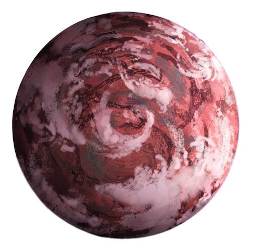
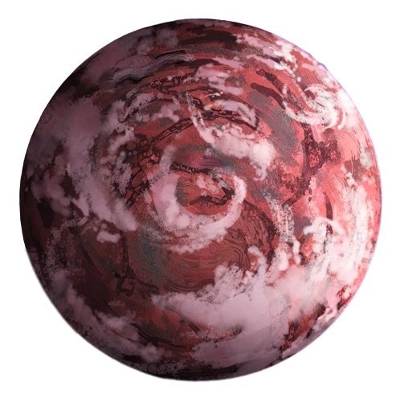
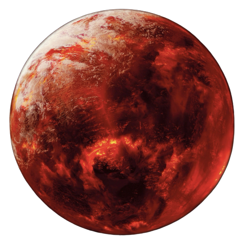

Conheça os nossos destinos!

Coruscant
- Galáxia: Vialactose
- Distância: 21b anos luz
- Tempo de viagem: 12 minutos
-
Coruscant é o planeta cidade. 100% de sua superfície é coberta por
uma única e imensa cidade, Coruscant City. Embora o planeta não
tenha mares ou florestas, seus habitantes vivem no mais pleno luxo
e conforto, sendo um dos planetas mais ricos dessa dimensão. A
população de Coruscant é diversificada, composta por diferentes
espécies de todo o universo, incluindo humanos, alienígenas e
seres cibernéticos. Essa mistura de culturas e raças cria uma
atmosfera rica em tradições, idiomas e culinárias variadas.
Cromopolis
- Galáxia: Ametistella
- Distância: 71b anos luz
- Tempo de viagem: 43 minutos
-
O Planeta Cromopolis é um mundo misterioso e encantador, com uma
paisagem distinta de tons púrpura e marrom. Suas vastas planícies
são cobertas por exóticas florestas roxas, onde criaturas incomuns
e plantas exuberantes prosperam. Seres bioluminescentes iluminam o
chão da floresta durante a noite, criando um espetáculo de luzes
coloridas. A civilização de Cromopolis é composta por seres
altamente espirituais e conectados com a natureza.
 

Lua Rústica de Plumavera
- Galáxia: Quiralis
- Distância: 2.2t anos luz
- Tempo de viagem: 41 horas
-
A Lua Rústica de Plumavera é uma pequena lua que orbita um
planeta distante. O ar é preenchido com um aroma de cookie,
proveniente das exóticas plantas e flores que crescem em
abundância. Seus habtantes, os "Plumaveralhenses", são criaturas
pequenas e peludas, com um ótimo senso de humor que adoram brincar
e contar piadas. Os visitantes que chegam à Lua Rústica de
Plumavera são recebidos com um carinho caloroso e uma série de
piadas de humor duvidoso.
Incendia
- Galáxia: Via Láctea
- Distância: 1.9 anos luz
- Tempo de viagem: 3 minutos
-
Incendia é um planeta vermelho ardente, cuja atmosfera está
constantemente envolta em uma neblina vermelha e ondas de calor
insuportáveis. Os habitantes de Incendia desenvolveram tecnologias
avançadas para sobreviver a tais condições. Cidades subterrâneas
foram construídas nas profundezas das montanhas vulcânicas, onde
fontes de energia geotérmica são exploradas e utilizadas. Os
Carvonitas são conhecidos por suas formas de arte únicas e
extravagantes, inspiradas nas cores e no caos do ambiente ao seu
redor.
